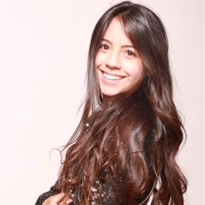

Hi, I'm Melanie

I build products that inspire people to create, explore, and immerse themselves in unforgettable experiences. The experiences that stay with us are the ones that spark curiosity, bring people together, or feel just a little bit magical. That's what I love creating.
As a Product Manager, I work at the intersection of emerging technology and immersive experiences, bringing technical and creative teams together to transform ambitious ideas into products that people genuinely love to use. My background in Civil Engineering taught me to think in systems, solve complex problems, and build with intention; that systems-first approach still shapes how I work today, helping me navigate highly technical, cross-functional challenges while keeping the user experience at the center.
Along the way, I've helped bring projects to life as the AI Project Manager for The Wizard of Oz at Sphere, Product Manager for World of Fallout, and Technical Product Manager for Nodey, a node-based generative AI workspace built alongside an incredible engineering team. If you're building something ambitious, innovative, or just plain fun, I'd love to connect.